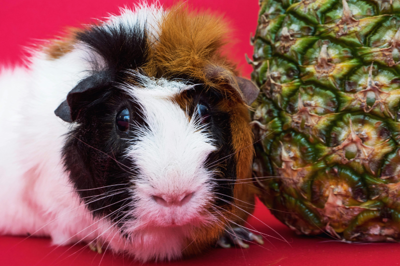
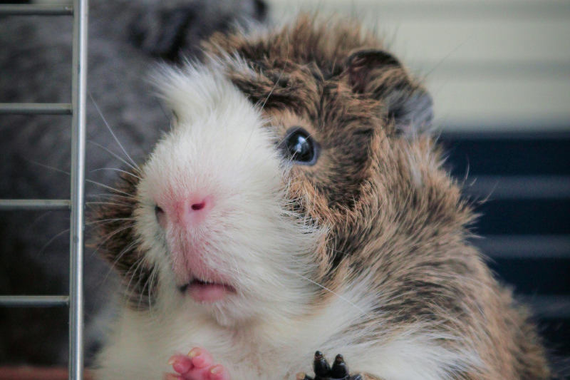
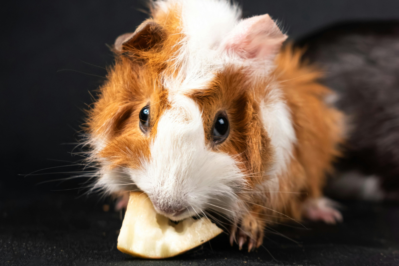

阿比西尼亞體型短粗而圓，身上有八至十個對稱的「漩渦」（越對稱的漩渦顏值越高），毛髮較粗硬，毛長基本上不超過 4 公分，毛色則多種多樣，整體看起來＂痞帥＂。 由於阿比尼西亞的毛色培育難掌控，所以常常會有不同花色的驚喜包，逆毛的漩渦就像煙花一樣綻放，但也需要經常梳理以防止毛髮糾結喔！
阿比西尼亞個性活力十足、好奇心重，較聰明也較容易訓練，很愛跟主人互動，如果多加訓練是有機會使用便盆的呦！（但還是不要抱太高期待） 目前家裡養的阿比＂卡爾＂，十分聰明，會認聲音也會認人，超有個性，但也比較強勢。 而且很常靠小聰明搶到室友＂選布＂的小黃瓜吃～
阿比西尼亞看起來炸毛亂亂的，因為捲毛緣故在照顧、修剪上面會比較難整理，也需要定期修剪漩渦才會比較明顯，因此還是要有耐心時常毛髮護理喲！
作者的話： 阿比西尼亞身上有很多炫毛，看起來個性十足。以我的飼養經驗來說，阿比個性上也會比較強勢，通常不是隨和聽話的類型，反而很有＂小聰明＂，適合可以跟他們＂鬥智＂的飼主XD


© 本網站為緯育TibaMe【第94期】前端工程師專業技術養成班學員作品,僅供學習、展示之用途。